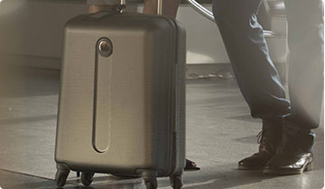
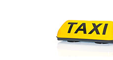

<!DOCTYPE HTML PUBLIC "-//W3C//DTD XHTML 1.0 Transitional//EN" "http://www.w3.org/TR/xhtml1/DTD/xhtml1-transitional.dtd">
<html xmlns="http://www.w3.org/1999/xhtml" xml:lang="ru" lang="ru" dir="ltr">
<head>
    <meta http-equiv="Content-Type" content="text/html; charset=utf-8" />
    <link rel="stylesheet" href="../css/vendor/aeroflot.css"/>
    <title>Аэрофлот</title>

    <link type="text/css" rel="stylesheet" media="screen" href="https://www.aeroflot.ru/cms/sites/all/themes/aeroflot/common/full/reset.css?E" />
    <link type="text/css" rel="stylesheet" media="screen" href="https://www.aeroflot.ru/cms/sites/all/themes/aeroflot/common/full/layout.css?E" />
    <link rel="stylesheet" href="../css/comfort.css">
    <link rel="stylesheet" href="../css/fancybox.css">

    <!--[if IE 7]>
    <link rel="stylesheet" type="text/css" href="https://www.aeroflot.ru/cms/sites/all/themes/aeroflot/common/full/ie7.css?E" />
    <link rel="stylesheet" type="text/css" href="https://www.aeroflot.ru/cms/sites/all/themes/aeroflot/static/css/ie7.css?E" />
    <![endif]-->
    <!--[if IE 8]>
    <link rel="stylesheet" type="text/css" href="https://www.aeroflot.ru/cms/sites/all/themes/aeroflot/static/css/ie8.css?E" />
    <![endif]-->
    <!--[if IE 9]>
    <link rel="stylesheet" type="text/css" href="https://www.aeroflot.ru/cms/sites/all/themes/aeroflot/static/css/ie9.css?E" />
    <![endif]-->

    <script type="text/javascript" src="https://www.aeroflot.ru/cms/misc/jquery-1.11.0.min.js?E"></script>
    <script type="text/javascript" src="https://www.aeroflot.ru/cms/sites/all/themes/aeroflot/static/js/jquery.flash-1.0.1.min.js?3"></script>
    <script type="text/javascript" src="https://www.aeroflot.ru/cms/sites/all/themes/aeroflot/static/js/jquery.bootstrap.tooltip.min.js?3"></script>
    <script type="text/javascript" src="https://www.aeroflot.ru/cms/sites/all/themes/aeroflot/static/js/jquery.fancyfields.min.js?3"></script>
    <script type="text/javascript" src="https://www.aeroflot.ru/cms/sites/all/themes/aeroflot/static/js/jquery-ui-1.10.4.custom.min.js?3"></script>

    <script src="../js/vendor/jquery.cycle-3.0.3.min.js?3"></script>
    <script src="../js/vendor/fancybox.js"></script>
    <script src="../js/jquery.scrollTo.min.js"></script>
    <script src="../js/jquery.class.js"></script>
</head>
<body class="yui-skin-sam page-type-content">
    <div class="main-body">
        
         <script>
            ;(function($) {
                    $(function() {
                        $('a.fancy-img').fancybox({
                            padding: 30
                        });
                        $('a.fancy-iframe').fancybox({
                            type: 'iframe',
                            width: 911,
                            height: 480,
                            padding: 30
                        });
                        $('a.fancy-video').fancybox({
                            'padding'         : 30,
                            'autoScale'       : false,
                            'transitionIn'    : 'none',
                            'transitionOut'   : 'none',
                            'width'           : 680,
                            'height'          : 495,
                            'type'            : 'swf',
                            'swf'             : {
                            'wmode'           : 'transparent',
                            'allowfullscreen' : 'true'
                            }
                        });
                    });
                })(jQuery);
        </script>
        <div class="af_content">
            <!-- comfort BEGIN -->
            <div class="cclWrapper">
                <div class="cclAnchor_wrapper">
                    <div class="cclAnchor ccl-anchor-js">
                        <a href="#anchor1">
                            <i class="cclIco cclIco-8"></i>
                            <span>Получение багажа</span>
                        </a>
                        <a href="#anchor2">
                            <i class="cclIco cclIco-13"></i>
                            <span>Послеполетное обслуживание</span>
                        </a>
                    </div>
                </div>
                <div class="cclTop">
                    <div class="cclNav">
                        <a href="comfort_1.html" class="cclNav-before">Перед полетом</a>
                        <a href="comfort_2.html" class="cclNav-underway">На борту</a>
                        <a href="comfort_3.html" class="cclNav-after current">После полета</a>
                    </div>
                    
                    <div class="cclTitle">класс Бизнес</div>
                </div>
                <div class="cclContent">
                    <!-- promo BEGIN -->
                    <div class="cclPromoText">
                        <div class="cclPromoText_header">Класс Бизнес в воздухе и на земле</div>
                        <p>По-настоящему комфортный перелет не заканчивается после приземления самолета. <br/> Приятным завершением путешествия классом Бизнес Аэрофлота станет приоритетная выдача багажа и приоритетное обслуживание на стойках для трансферных пассажиров.
                            <br/> Чтобы Ваше путешествие было комфортным от начала и до конца, следуйте указателям <br/> с логотипом SkyPriority.</p>
                    </div>
                    <!-- promo END -->
                    <div class="cclHeader" id="anchor1">
                        <i class="cclIco cclIco-8"></i>
                        Получение багажа
                    </div>
                    <div class="ccl_clear cclText">
                        
                        <div class="ccl_zfix">
                            <div class="cclText_header">Процедура получения багажа</div>
                            <p>Багаж пассажиров класса Бизнес доставляется в зал прилета и выдается в первую очередь.</p>
                            <p>Для получения багажа по прибытии в аэропорт назначения Вам необходимо иметь при себе посадочный и отрывной талон с номером багажной бирки.</p>
                        </div>
                    </div>
                    <div class="cclHeader" id="anchor2">
                        <i class="cclIco cclIco-13"></i>
                        Послеполетное обслуживание
                    </div>
                    <div class="cclText">
                        <div class="ccl_clear">
                            <div class="cclText_column side">
                                
                                <div class="cclText_header">Привилегии</div>
                                <p>Элитные участники программы «Аэрофлот Бонус» вместе с картой участника получают багажные бирки. Повесьте Вашу бирку на багаж перед его регистрацией, чтобы воспользоваться услугой приоритетного обслуживания и выдачи багажа после полета.</p>
                            </div>
                            <div class="cclText_column">
                                
                                <p>Послеполетные процедуры включают прохождение послеполетного паспортного контроля и регистрации на следующий сегмент перелета для трансферных пассажиров с приоритетным обслуживание на стойках для трансферных пассажиров, отмеченных логотипом SkyPriority.</p>
                                <p>Если после полета Вы не получили багаж, Вы можете обратиться к сотрудникам контакт-центра Аэрофлота или <a href="#">отправить обращение</a></p>
                            </div>
                        </div>
                    </div>
                </div>
                <!-- links BEGIN -->
                <div class="cclLinks">
                    <a href="https://www.aeroflot.ru/cms/before_and_after_fly/medical_info" class="cclLinks_item marked">
                        <span class="cclLinks_title">Медицинская информация</span>
                        
                    </a>
                    <a href="https://www.aeroflot.ru/cms/before_and_after_fly/terminal_info" class="cclLinks_item">
                        <span class="cclLinks_title">Схема аэропорта, информация<br>о терминалах,<br>о паркингах</span>
                        
                    </a>
                    <a href="https://www.aeroflot.ru/cms/before_and_after_fly/taxi" class="cclLinks_item marked">
                        <span class="cclLinks_title">Заказ такси</span>
                        
                    </a>
                </div>
                <!-- links END -->
                <a href="business_2.html" class="cclOnBoard_reverse">На борту</a>
            </div>
            <!-- comfort END -->
        </div>
    </div>
</body>
</html>